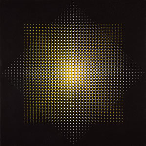

|  |
Classes Abstratas
1.0
2° Projeto Computação Numérica- UFRN
|
| ▼CFiguraGeometrica | A classe FiguraGeometrica serve para facilitar na construção das figuras geométricas |
| CCirculo | A classe Circulo é uma subclasse da FiguraGeometrica e serve para desenhar circunferência e círculos na tela |
| CReta | A classe Reta é uma subclasse da FiguraGeometrica e desenha reta na tela |
| CRetangulo | A classe Retangulo é uma subclasse da FiguraGeometrica e desenha retângulo na tela |
| CScreen | A classe Screen é a tela a ser desenhada |
1.8.14